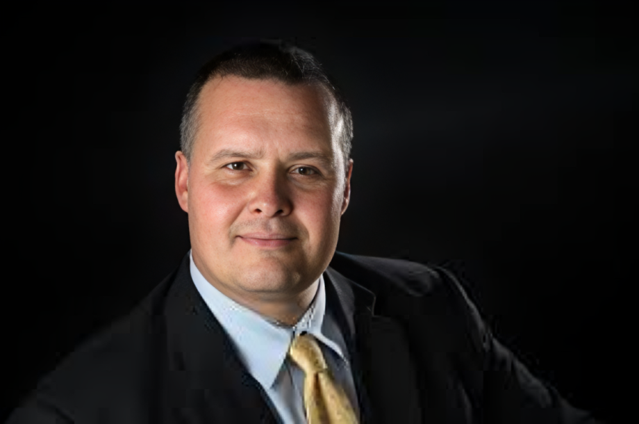

Principal, Oyler School (2000–2013)
Craig joined Oyler in 1998 as assistant principal and served as principal from 2000 to 2013, leading the school's transformation into a nationally recognized Community Learning Center.
"We were experiencing so many awful things in poverty and in the inner city. Almost every aspect of the Community Learning Center was very beneficial in delivering high quality services to kids."
"We didn't come in and say we are doing this. We brought the whole community. We sat them down in rooms — it went on for a year before we even did anything. What were their barriers? What were their obstacles? We developed what we wanted to have inside the schools."
"Because the poverty was a little bit more extreme — hunger was real. We had breakfast, lunch, and dinner in the evenings. We had a food bank. The need was so high, and everybody was doing it. There weren't kids that were rich. Everyone was poor and took advantage of the services."
"We started an eye center. The first one in the United States. The first day it opened, it was a Friday. We took all the kids down from a class — there were 23 kids. All of them got an eye exam. The next day, the optometrist did all the work. Monday and Tuesday they called the kids back. 18 of 23 had to have glasses. They were in the 4th and 5th grade. Some of them were living in a blind world and didn't even know it."
"You get 50, 60 of them that have extreme mental health issues. They can disrupt an entire school. Because they had so many untreated mental health issues — usually caused from trauma by poverty. Being able to get them therapy, get them medicine — that was instantaneous, getting kids to be able to learn."
"Our biggest issue: 84% of every kid that went to Oyler from the community in Lower Price Hill dropped out of high school before they hit a 10th grade seat. The highest dropout rate in the city, the entire district, and probably in the United States."
"When they left us after the eighth grade, before we were a high school, they were bused to the other side of town, somewhere they didn't know. We saw their success rate go down. Our idea was to keep them there and develop a high school."
"In a third grade class at Oyler, you got 15–20 issues because kids didn't eat, they were absent, they were late, they were sick, they couldn't see. About 30–40% of the day was tied up in issues about the environment. Once we started taking things off the teacher, then we were able to focus on the curriculum."
"One of the key components — by training I am an administrator. I'm not a doctor, I'm not a dentist. We have to rely on those professionals, marry them in the school, make them part of the school. We relied heavily on the resource coordinator."
"Our biggest partner was obviously the health department. When a kid is in poverty and gets a really bad toothache, they go to the emergency room. We were taking the burden off hospitals and emergency rooms — and it cost no money to the taxpayers."
"The very first thing I'd tell them is you need to start some roundtable discussion with your staff, with your families, with the key people in the communities, and identify the barriers and needs. Everyone thinks that will be quick. That engagement piece is so important. It is no less than a year long. Number two: get somebody to manage and coordinate those services and make sure they are working."
"Things are changing. All kids are graduating from high school now at Oyler. The center is taking a different approach now. They are more involved in media and electronics, they partner with news stations. It's evolved. Communities are changing. People are staying in the community after graduation."